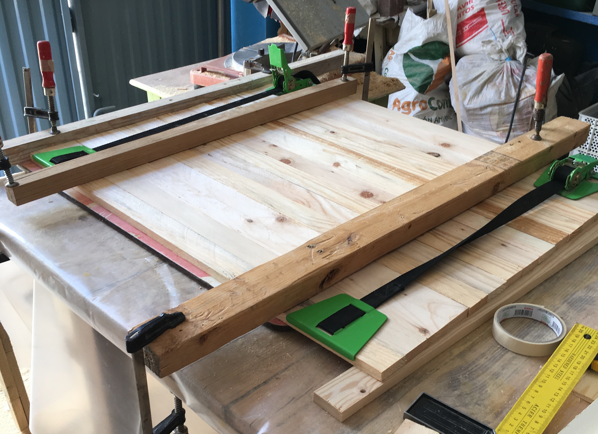
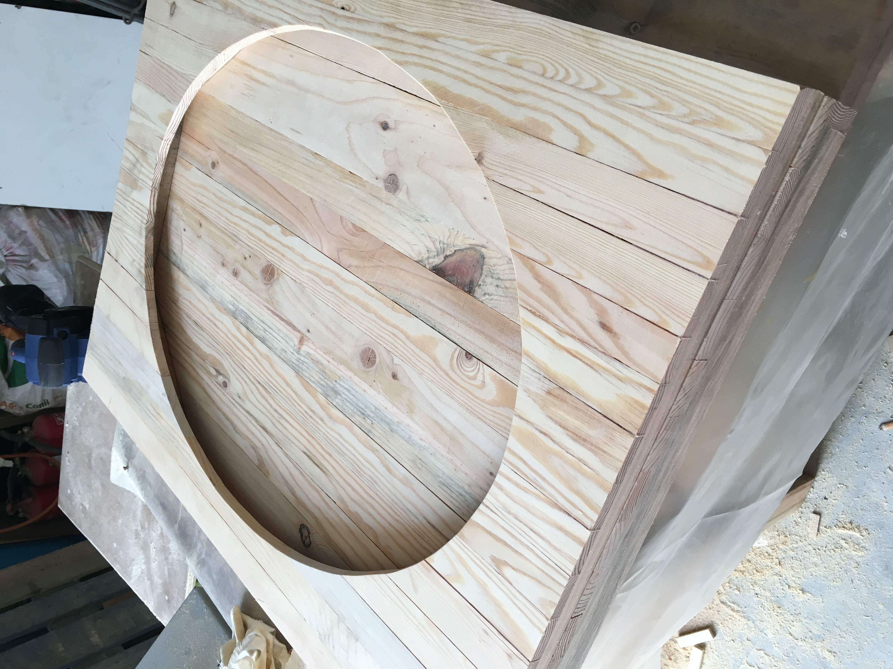
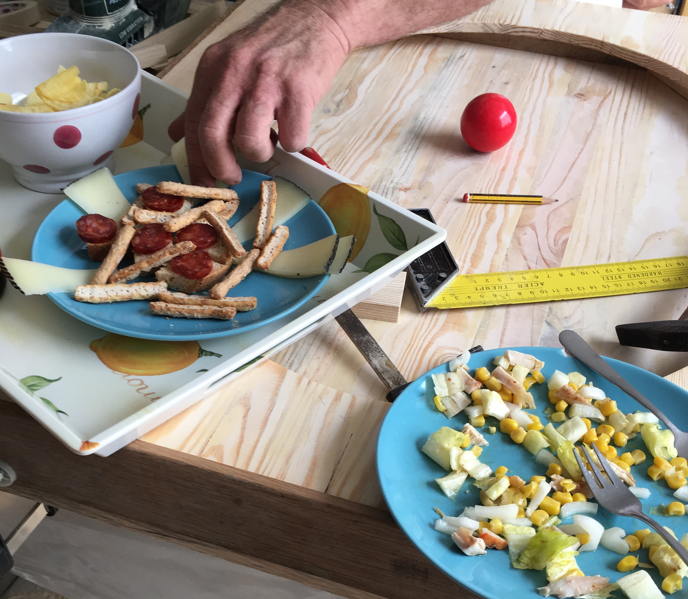
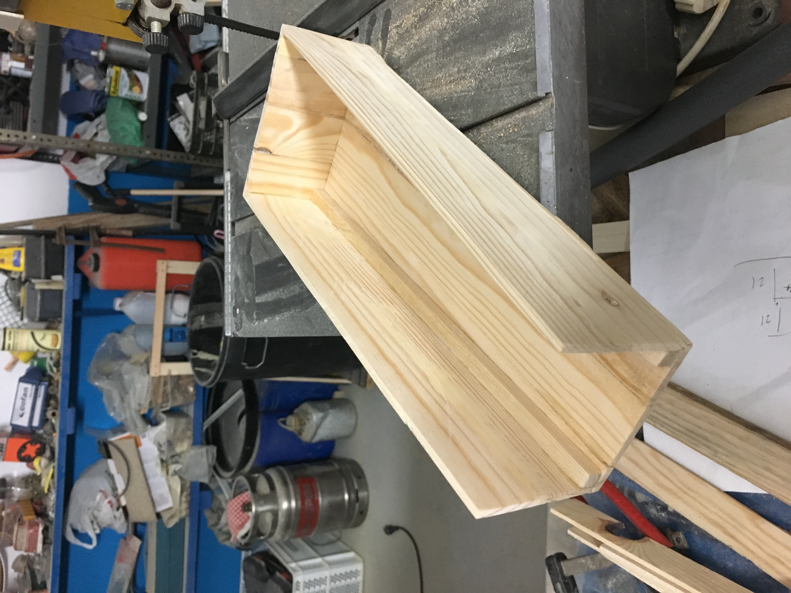
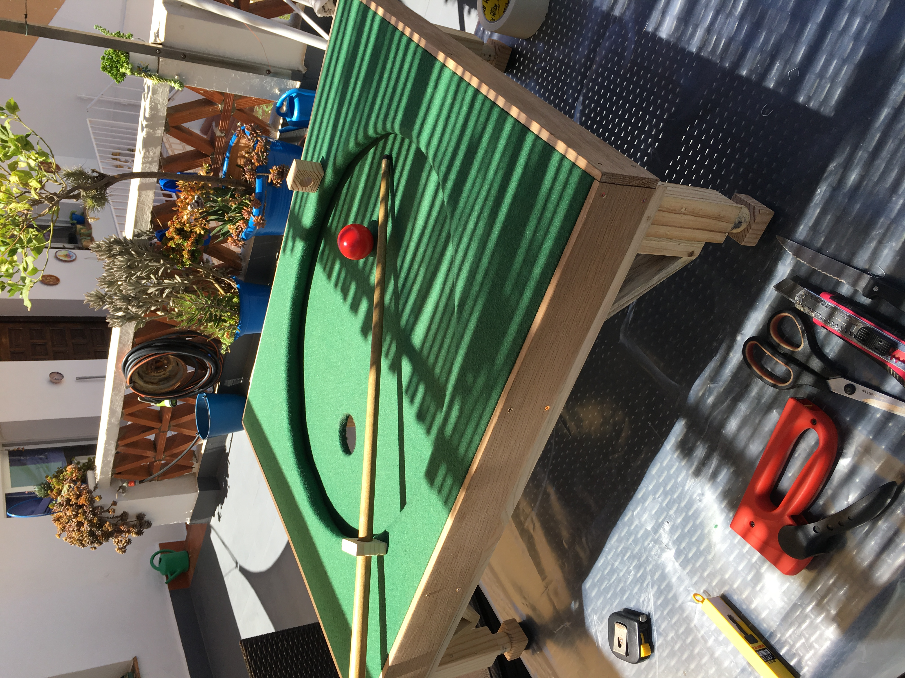
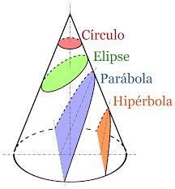
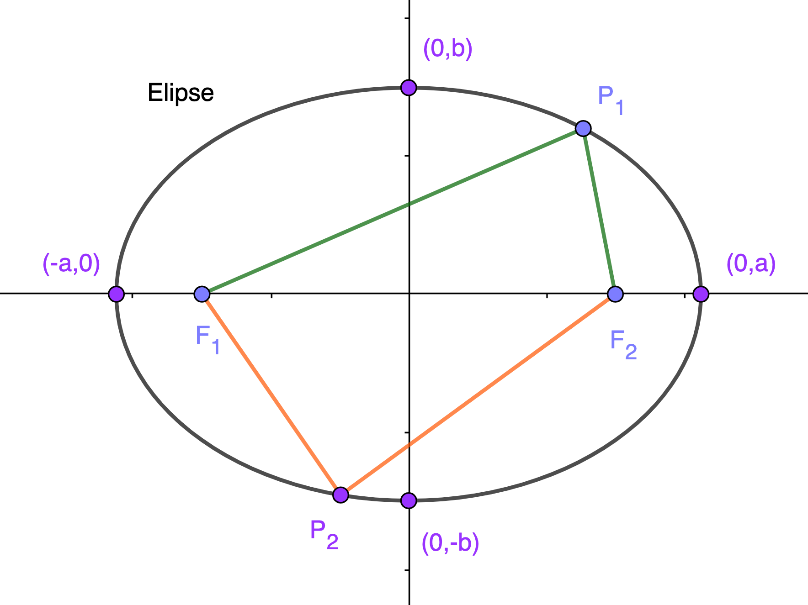
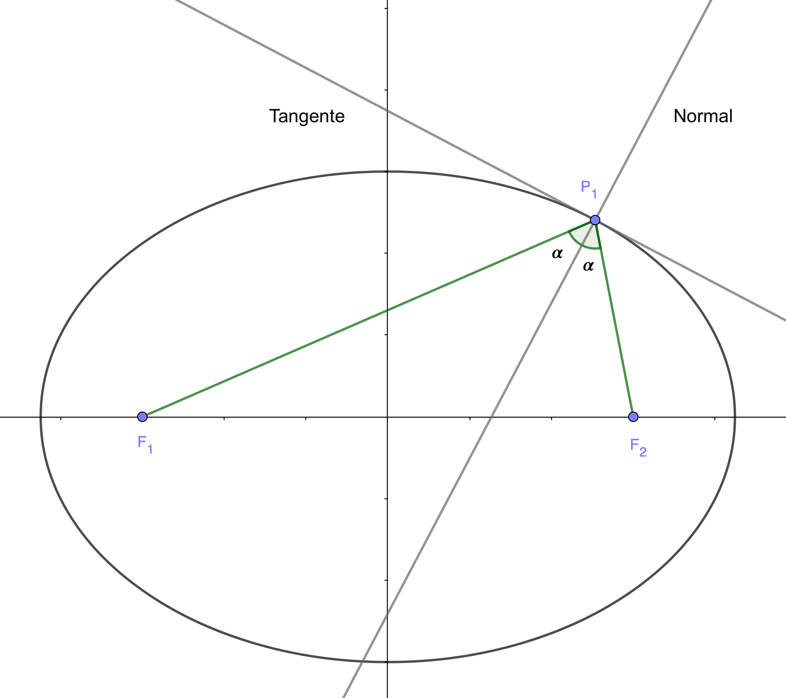
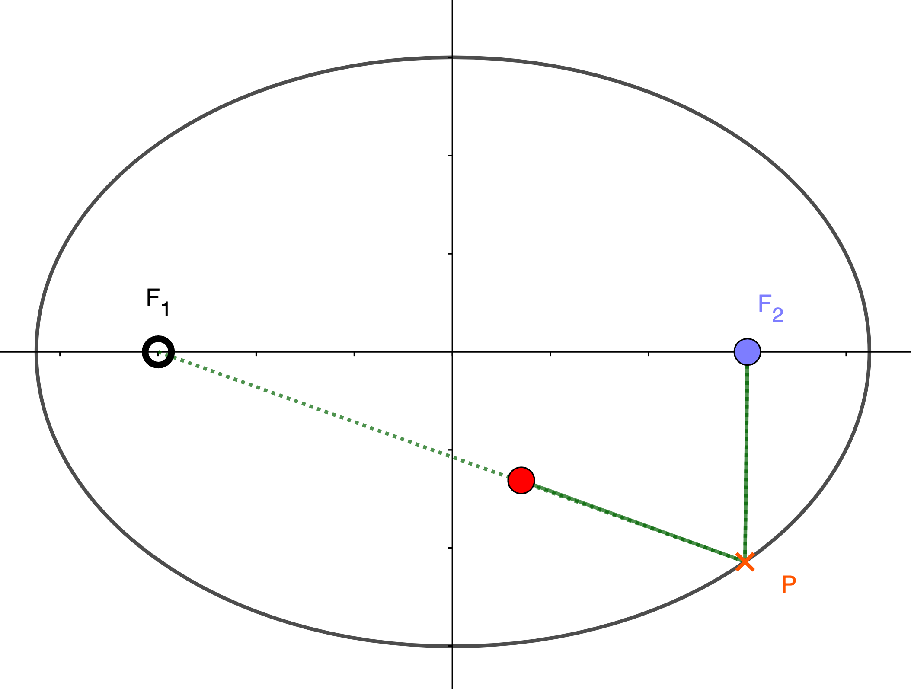
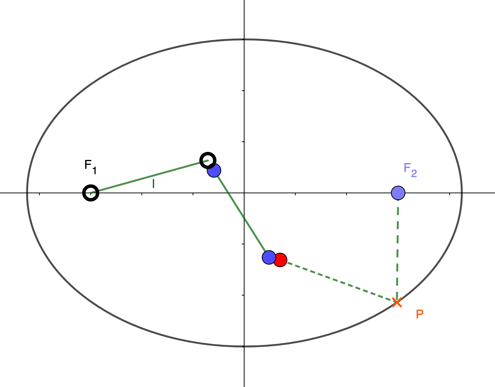

En mi tercer año de estudios en la Facultad de Matemáticas, el profesor
Jose Antonio Prado Bassas (
titoeliatron) y
yo, con la mayúscula ayuda de
Rafael Aros Granado, un aficionado a la carpintería de San Enrique de Guadiaro (San Roque, Cádiz), decidimos replicar la idea de una mesa de billar elíptica a tamaño reducido para exponerla como maqueta interactiva en la Facultad y en las distintas ferias de exposición que se celebran en Sevilla (Feria del Estudiante y Feria de la Ciencia). En este artículo vamos a explicar cómo se hizo y las propiedades de este atípico billar que lo hacen tan interesante.
Como se hizo el billar elíptico
La idea desde el primer momento era realizar un proyecto partiendo de elementos reciclados. Fue entonces cuando Fali (Rafael Aros) propuso tomar tablas de madera, pegarlas juntas y confeccionar tablones más grandes sobre los que construir la maqueta.

Para hacer la elipse se utilizó el conocido como
Método del jardinero. Para ello se colocan dos clavos en los que queremos que sean los focos de nuestra elipse y se les ata una cuerda de longitud fija de las dimensiones deseadas. Por último, se tensa el hilo en un extremo con un lápiz y se traza la curva con cuidado obteniéndose una elipse.
Como se puede comprobar, en nuestro caso hubo que trazarla más de una vez. Es importante que la curva resultante sea una elipse ya que de lo contrario no se mantendían las propiedades que queremos visualizar más tarde. Una vez levantada la parte superior, había que construir el cajón inferior sobre el que se apoyaría la elipse, de nuevo usando la misma idea de trabajar con maderas recicladas.

Para hacer la mesa lo más realista posible, apoyamos el billar sobre cuatro patas que se asemejaban a las de un billar de verdad. El inconveniente de colocar patas era que al trasladarlo de un lugar a otro podían romperse con facilidad. Como solución, a Fali se le ocurrió la idea de esconderlas con la ayuda de bisagras y reforzarlas cuando estas estuviesen en su posición original con unas escuadras de madera que también podrían esconderse con facilidad. De esta forma, cualquier persona podría apoyarse en la mesa que las patas no cederían.
Para que la bola pudiese rebotar en las paredes de la elipse y salir con la suficiente fuerza era necesario acolchar las paredes. Para ello usamos tubos de neopreno que se utilizan para aislar cables cuando estos quedan al aire libre.
Durante el mes y medio de verano que duró el proyecto, el trabajo de carpintería durante todas las mañanas era cuanto menos agotador, por eso a menudo era necesario parar a descansar y refrescarse.

Siguiendo con el hilo del proyecto, una vez contruido el esqueleto de la mesa de billar había que darle forma. Para ello forramos ambas partes con fieltro verde. En esta tarea nos ayudó mucho contar con la experiencia y maña de Maribel Mena, la mujer de Fali.
El último detalle a incorporar era un cajón que colocar bajo el agujero para poder recoger la bola con facilidad y sin que saliese rodando, lo que dado el espacio del que se dispone en algunos lugares, era de interés para no tener que comprar una bola nueva con cada tiro. El cajón debía de estar inclinado lo suficiente para que la bola rodase y se pudiese coger sin tener que introducir la mano. Tras algunas pruebas conseguimos la inclinación necesaria.

Así, después de algunas capas de barniz, últimos retoques y adecuar un palo de billar a la escala de nuestra maqueta, se dió por concluido el proyecto y el resultado fue el que podéis obsedrvar en la siguiente imagen:

Y, ¿por qué una elipse?
Matemáticamente, se define una elipse como una curva plana, simple y cerrada con dos ejes de simetría que resulta al cortar la superficie de un cono por un plano oblicuo al eje de simetría con ángulo mayor que el de la generatriz respecto del eje de revolución.

Una defición más tratable es la que se da de la elipse como lugar geométrico:
Es el conjunto de puntos cuya suma de distancias a dos puntos fijos llamados focos es constante.

Es decir, fijándonos en la imagen, la suma de la longitud de los segmentos verdes y la suma de la longitud de los segmentos naranjas son la misma, y esto ocurre para cualquier punto de la elipse. Desarrollando esta definición, llegamos a obtener el siguiente resultado:
Supongamos que \(P=(x,y)\) es un punto cualquiera de la elipse de centro \(C=(0,0)\) y sean \(F_1 = (-c,0), F_2 = (c,0)\) los focos de la elipse. Según la defición se tendría que cumplir que \[d(F_1,P) + d(F_2,P) = cte.\] Vamos a suponer para simplificar cálculos que \(cte = 2a\). Tomando la distancia euclídea, \(d(P_1,P_2) = \sqrt{(x_2-x_1)^2+(y_2-y_1)^2}\), tendremos que \[d(F_1,P) + d(F_2,P) = \sqrt{(x-c)^2+(y-0)^2} + \sqrt{(x+c)^2+(y-0)^2} = 2a,\] lo que desarrollando la ecuación nos lleva a que \[\frac{x^2}{a^2} + \frac{y^2}{b^2} = 1, \ \text{con} \ c^2 = a^2 - b^2.\] Si el centro es \(C=(x_0,y_0)\), desarrollando obtendríamos la ecuación \[\frac{(x-x_0)^2}{a^2} + \frac{(y-y_0)^2}{b^2} = 1.\]
Si golpeamos la bola desde un foco de la elipse hacia cualquier punto de esta, se cumple que llegaremos a pasar por el otro foco (siempre que la elipse sea perfecta y los focos estén situados correctamente, por eso en la realidad puede fallar). Esto se debe a que el ángulo de incidencia o entrada con la normal es igual al ángulo de reflexión o salida con la normal para todo punto de la elipse. La normal a cualquier punto de la elipse se obtiene como la bisectriz del ángulo que forman los dos radiovectores (segmentos desde los respectivos focos) y el choque es elástico, i.e. se conserva la energía cinética total del sistema de cuerpos durante la interacción, no hay pérdida de energía durante este.

Llegados a este punto os planteo dos questiones. Supongamos que obligatoriamente tenemos que hacer rebotar la bola contra la pared de la elipse:
- ¿Desde qué punto de la mesa tengo que tirar para introducir la bola en un solo tiro?
- Partiendo desde el punto de la pregunta anterior, ¿hay algún camino por el que llegue antes?
Si has pasado tan rápido de las preguntas es porque no tienes ganas de pensar. No pasa nada.
Si llegado aquí justo después de leer lo anterior es que sigues sin querer pensar. Tampoco pasa nada.
¿Pero lo has intentado?
Obviando la suposición de que hay que hacer rebotar la bola, hay una respuesta fácil a la primera pregunta que es desde cualquier punto en la dirección del agujero, es decir en líne recta. Pero si se tiene en cuenta la suposición, la respuesta es desde el foco hacia cualquier punto de la elipse. Si situamos la bola a golpear en \(F_1\) y el agujero en \(F_2\), da igual cuál sea el punto \(P\) al que apuntemos, que el rebote acaba seguro en \(F_2\) por la propierdad de los ángulos de incidencia y reflexión. La respuesta a la segunda pregunta también se ha comentado en el artículo. Si la distancia de un foco a un punto de la elipse y desde ese punto al otro foco es constante, entonces cualquier camino tiene la misma longitud, y por lo tanto en todos se tardará lo mismo (suponiendo que se tira con la misma fuerza), hasta el camino más enrevesado como puede ser tirar en sentido contrario al agujero.
Se puede jugar con más de una bola. El interés de una mesa de billar elíptica es que es la mesa perfecta para hacer carambola segura. Supongamos que tenemos una bola roja situada en un punto cualquiera del interior de la elipse que no sean los focos y una bola blanca en el foco, entonces calcular la trayectoria para meterla con un solo tiro desde el foco es muy sencillo.

Si ahora jugamos con tres bolas, una blanca en el foco (por ejemplo), una azul con la que queremos hacer carambola y una roja que queremos meter, entonces tendremos que golpear la bola azul de forma que al golpear la roja esta tome la trayectoria que seguiría si la golpeásemos desde el foco. Eso ya requiere de mayor destreza, claro está.

¿Algo más?
Existe toda una
Teoría de Billares que se usa para modelizar
sistemas dinámicos en el cual una partícula alterna entre movimiento rectilíneo y reflexiones especulares en un contorno o frontera con choques perfectamente elásticos y sin rozamiento. Cuando la partícula impacta contra el contorno se refleja en él sin pérdida de su velocidad. En este sentido la geometría y topología de los billares es muy relevante, si en vez de usar un cuadrado o elipse usamos polígonos o curvas no regulares, o si incluso permitimos que el espacio sea tridimensional y tommamos un cubo, un elipsoide o un
toro, como se ha llegado a estudiar en algunos casos, se obtienen resultados muy diferentes e interesantes que permiten modelizar muchos fenómenos. Por ejemplo, un gas formado por moléculas encerrado en un recipiente de cualquier forma es un caso de billar tridimensional donde se tienen choques perfectamente elásticos y donde las “bolas” (moléculas) se mueven indefinidamente. Algunos ejemplos de billares destacados son:
- Billares de Hadamard
- Billares de Artin
- Billar de Sinái
- Estadio de Bunimóvich
El estudio profundo de estos sistemas sirve de apoyo para importantes teorías como son la
Teoría Ergódica se dedica principalmente al estudio matemático del comportamiento promedio a largo plazo de los sistemas dinámicos, o la conocida como
Teoría del Caos que trata ciertos tipos de sistemas complejos y sistemas dinámicos no lineales muy sensibles a las variaciones en las condiciones iniciales.
En estos casos las partículas se colocan aleatoriamente en el espacio y se observa que ocurre al permitir choques entre ellos. Pequeñas variaciones las condiciones iniciales pueden implicar grandes diferencias en el comportamiento futuro, imposibilitando la predicción a corto plazo. Esto sucede aunque estos sistemas son en rigor deterministas, es decir; su comportamiento puede ser completamente determinado conociendo sus condiciones iniciales. Recientemente, con la ayuda de herramientas matemáticas desarrolladas en las últimas cinco décadas, un grupo de matemáticos ha demostrado que, para toda una familia de formas de mesas, después de tan solo unos pocos choques la posición de la bola parece totalmente aleatoria.